1020B10 cover of timing system with chain drive - r + r replace oil seal and gasket
- Path
- Procedures > 10 ENGINE > 1020 CRANKCASE SUMP AND COVERS > 1020B timing system oil seal covers > 1020B10 cover of timing system with chain drive - r + r replace oil seal and gasket
- Kind
- repair procedure (removal / refitting; the operation number is the code)
- Applies to
- engines: 1.3 JTD; all production periods
- Interactive page
- https://sloeber94.github.io/elrnDB-lYpsln/en/#/2429008
Applies to: engines: 1.3 JTD; all production periods
 Removing
Removing
 Refitting
RefittingPosition the vehicle on the ramp.
Make sure that the ignition key is in the OFF position; then disconnect the battery negative (-) terminal.
 | Name | Connector |
|---|---|---|
- | Battery |
Drain the air conditioner coolant circuit 0010T84 coolant for air conditioning system dehydrate and recharge .
1. Disconnect the electrical connection from the air flow meter.
| Name | Connector |
|---|---|---|
1 | Air flow meter |
2. Loosen the band and disconnect the the turbocharger air inlet sleeve from the rigid pipe, air flow meter side.
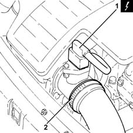
Applies to: engines: 1.3 JTD; all production periods
1. Remove the air filter (1a) complete with air flow meter (1b) by releasing from the underlying pins and then from the rear fastenings.
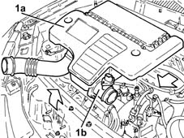
Applies to: engines: 1.3 JTD; all production periods
1. Loosen the band and disconnect the lower radiator coolant outlet hose from the radiator, radiator side.
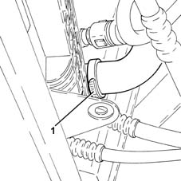
Applies to: engines: 1.3 JTD; all production periods
1. Remove the plug (1a) and, in its place, fit the tool (1b) on the exhaust side camshaft.
 | Name | Country |
|---|---|---|
1b | Template | 1.871.000.900 |
2. Fit a suitable (8 mm diameter) pin via the special opening in the gearbox.
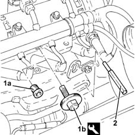
Applies to: engines: 1.3 JTD; all production periods
1. Undo the bolt (1a) and disconnect the pipe from the expansion valve to the compressor (1b), compressor side.
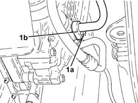
Applies to: engines: 1.3 JTD; all production periods
1. Disconnect the quick-release fitting for the coolant return pipe to the engine coolant reservoir.
2. Undo the nuts (2a) and move the engine coolant reservoir (2b) sideways.
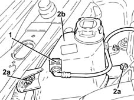
Applies to: engines: 1.3 JTD; all production periods
Position a hydraulic lift under the crankcase sump.
1. Undo the nut fixing the air conditioning system pipe mounting bracket to the timing side power unit flexible mounting.
2. Undo the nuts (2a) and (2b), then remove the timing side power unit support flexible mounting (2c).
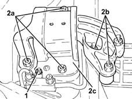
Applies to: engines: 1.3 JTD; all production periods
1. Undo the bolts fixing the air conditioning pipe mounting brackets to the timing side rigid engine support.
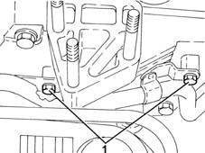
Applies to: engines: 1.3 JTD; all production periods
1. Undo the bolts (1a) and remove the timing side rigid engine support (1b) complete with engine lifting bracket (1c).
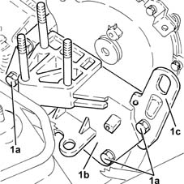
Applies to: engines: 1.3 JTD; all production periods
1. Fit the tool (1a), complete with support mountings (1b).
| Name | Country |
|---|---|---|
1a | Crossmember | 1.870.595.000 |
| Name | Country |
|---|---|---|
1b | Support mountings | 1.870.650.000 |
2. Fit the tools (2a) and (2b), then connect them using links (2c) to the brackets on the engine.
| Name | Country |
|---|---|---|
2a | Crossmember | 1.860.851.000 |
| Name | Country |
|---|---|---|
2a | Vertical support | 1.871.001.300 |
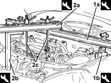
Applies to: engines: 1.3 JTD; all production periods
Remove the hydraulic lift from underneath the crankcase sump.
Proceed with removal 4450B04 right front wheel r r .
Proceed with removal 7055B66 Engine compartment DUST SHIELD protection in right front wheel arch - R.R. .
Proceed with removal 7055B91 Right front WHEEL ARCH LINER - R.R. .
Proceed with removal 1092G10 single engine belt r r .
Proceed with removal 1092A10 Crankshaft services PULLEY - R.R. .
1. Using tools (1a) and (1b) for counter-torque, undo the left hand bolt (1c) fixing the pulley support flange to the crankshaft.
| Name | Country |
|---|---|---|
1a | Counter-torque | 1.871.000.200 |
| Name | Country |
|---|---|---|
1b | Support for counter-torque | 1.860.831.000 |
2. Remove the pulley flange on the crankshaft.
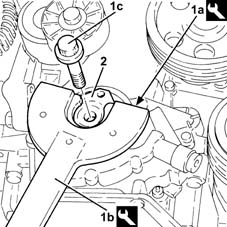
Applies to: engines: 1.3 JTD; all production periods
1. Undo the bolt (1a) and remove the single drive belt tensioner (1b).
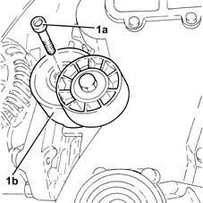
Applies to: engines: 1.3 JTD; all production periods
1. Undo the bolts (1a) and remove the water pump (1b) complete with gasket.
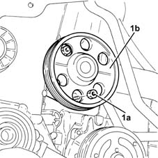
Applies to: engines: 1.3 JTD; all production periods
Proceed with removal .
Proceed with removal 2110A60 manual gearbox/engine coupling bracket - r+r .
Proceed with removal 1020A20 crank case oil sump - r + r clean seals for sealant application .
1. Release the electrical wiring (1a) from the bands (1b).
2. Undo the bolt (2a) and disconnect the connector (2b) for the engine oil vapour recovery pipe from the timing cover with the chain drive.
3. Undo the upper bolts fixing the timing cover with the chain drive.
4. Recover the brackets.
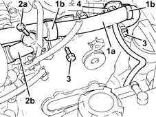
Applies to: engines: 1.3 JTD; all production periods
1. Undo the lower bolts (1a) and the nuts (1b) fixing the chain drive timing cover.
2. Remove the chain drive timing cover (2a), complete with engine oil suction unit (2b) and engine oil pump.
3. Remove the chain drive timing cover gasket.
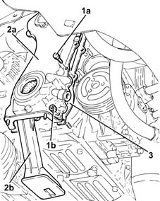
Applies to: engines: 1.3 JTD; all production periods
1. At the bench, undo the bolts (1a) and separate the engine oil intake (1b), complete with gasket (1c) from the chain drive timing cover.
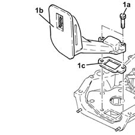
Applies to: engines: 1.3 JTD; all production periods
1. Remove the crankshaft front oil seal from the chain drive timing cover.
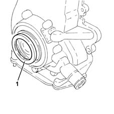
Applies to: engines: 1.3 JTD; all production periods
Refitting
Removing1. Place the chain drive timing cover in position with a new crankshaft front oil seal (1a) using the tool (1b).
| Name | Country |
|---|---|---|
1b | Fitting tool | 1.860.878.000 |
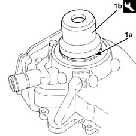
Applies to: engines: 1.3 JTD; all production periods
Place the engine oil intake complete with gasket in its housing in the chain drive timing cover and secure it using the bolts.
1. Place a new chain drive timing cover gasket in position.
2. Fit the tool on the chain drive timing cover.
| Name | Country |
|---|---|---|
2 | Hose | 1.879.900.600 |
3. Place the chain drive timing cover (3a), complete with engine oil suction unit (3b) and engine oil pump, in position, then secure it temporarily using the bolt (3c).
4. Tighten the chain drive timing cover fixing nuts and bolts to the recommended torque.
 | Fastening | Component | Ø | Value (daNm) |
|---|---|---|---|---|
4 | Bolt | TIMING COVER | M6 | 0.8 ÷ 1.0 |
| Fastening | Component | Ø | Value (daNm) |
|---|---|---|---|---|
4 | Nut | TIMING COVER | M6 | 0.8 ÷ 1.0 |
Undo the bolt and remove the tool from the chain drive timing cover.
| Name | Country |
|---|---|---|
- | Hose | 1.879.900.600 |
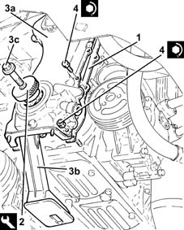
Applies to: engines: 1.3 JTD; all production periods
Connect the connector for the engine oil vapour recovery pipe to the chain drive timing cover and tighten the bolts.
Fix the electrical wiring using the bands.
Proceed with refitting 1020A20 crank case oil sump - r + r clean seals for sealant application .
Proceed with refitting 2110A60 manual gearbox/engine coupling bracket - r+r .
1. Place the water pump (1a), complete with gasket, back in its housing and secure it tightening the bolts (1b) to the recommended torque.
| Fastening | Component | Ø | Value (daNm) |
|---|---|---|---|---|
1b | Nut | COOLANT PUMP | M6 | (Upper engine crankcase side) 0.8 ÷ 1.0 |
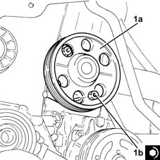
Applies to: engines: 1.3 JTD; all production periods
1. Place the engine components single drive belt moving tensioner (1a) back in its housing and fix it tightening the bolt (1b) to the recommended torque.
| Fastening | Component | Ø | Value (daNm) |
|---|---|---|---|---|
1b | Bolt | SINGLE SERVICES MOBILE BELT TENSIONER | M10 | (Upper engine crankcase side) 4.5 ÷ 5.5 |
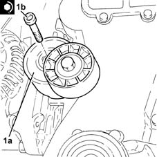
Applies to: engines: 1.3 JTD; all production periods
1. Place the pulley support flange in position on the crankshaft (1a) and tighten the left hand bolt (1b) to the recommended torque using tools (1c) and (1d) for counter-torque.
| Fastening | Component | Ø | Value (daNm) |
|---|---|---|---|---|
1b | Left hand thread bolt | PULLEY SUPPORT FLANGE ON CRANKSHAFT | M14 | (Crankshaft side) 21.9 ÷ 24.2 |
| Name | Country |
|---|---|---|
1c | Counter-torque | 1.871.000.200 |
| Name | Country |
|---|---|---|
1d | Support for counter-torque | 1.860.831.000 |
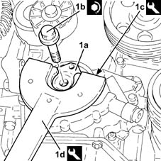
Applies to: engines: 1.3 JTD; all production periods
Proceed with refitting 1092A10 Crankshaft services PULLEY - R.R. .
Proceed with refitting 1092G10 single engine belt r r .
Proceed with refitting 7055B91 Right front WHEEL ARCH LINER - R.R. .
Proceed with refitting 7055B66 Engine compartment DUST SHIELD protection in right front wheel arch - R.R. .
Proceed with refitting 4450B04 right front wheel r r .
Position the hydraulic lift under the crankcase sump.
Remove the safety tools used for supporting the power unit.
| Name | Country |
|---|---|---|
- | Crossmember | 1.860.851.000 |
| Name | Country |
|---|---|---|
- | Vertical support | 1.871.001.300 |
| Name | Country |
|---|---|---|
- | Crossmember | 1.870.595.000 |
| Name | Country |
|---|---|---|
- | Support mountings | 1.870.650.000 |
1. Place the timing side rigid engine support (1a), complete with engine lifting bracket (1b), in position and secure it tightening the bolts (1c) to the recommended torque.
| Fastening | Component | Ø | Value (daNm) |
|---|---|---|---|---|
1c | Bolt | ENGINE MOUNT TIMING SIDE | M10 | (Engine crankcase side) 5.7 ÷ 6.3 |
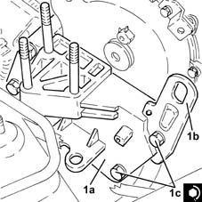
Applies to: engines: 1.3 JTD; all production periods
Tighten the bolts fixing the air conditioning pipe mounting brackets to the timing side rigid engine support.
1. Place the timing side power unit support flexible mounting (1a) in position and secure it tightening the nuts (1b) and (1c) to the recommended torque.
| Fastening | Component | Ø | Value (daNm) |
|---|---|---|---|---|
1b | Nut | FRONT RUBBER MOUNTS | M10 | (Rigid support side) 4.5 ÷ 5.5 |
| Fastening | Component | Ø | Value (daNm) |
|---|---|---|---|---|
1c | Nut | FRONT RUBBER MOUNTS | M10 | (Bodyshell side) 4.1 ÷ 5.0 |
2. Tighten the nut fixing the air conditioning system pipe mounting bracket to the timing side power unit flexible mounting.
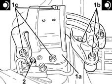
Applies to: engines: 1.3 JTD; all production periods
Remove the hydraulic lift from underneath the crankcase sump.
Refit the coolant reservoir in its seating and secure with its bolts.
Connect the quick-release fitting on the coolant return pipe to the engine coolant reservoir.
1. Connect the pipe from the evaporator pipe connector to the compressor (1a), compressor side and fix it tightening the bolt (1b) to the recommended torque.
| Fastening | Component | Ø | Value (daNm) |
|---|---|---|---|---|
1b | Nut | EXPANSION VALVE - COMPRESSOR PIPE | M6 | (Compressor side) 0.7 ÷ 1.1 |
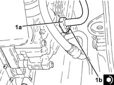
Applies to: engines: 1.3 JTD; all production periods
Remove the pin from the hole on the gearbox.
Remove the tool for timing the exhaust side camshaft and tighten the plug.
| Name | Country |
|---|---|---|
- | Template | 1.871.000.900 |
Connect the lower coolant outlet hose from the radiator, radiator side, and tighten the band.
Replace the air filter, complete with air flow meter, in its housing.
Connect the air intake sleeve to the turbocharger, air flow meter side, and tighten the band.
Connect the electrical connection to the air flow meter.
Connect the negative (-) battery terminal.
Refill the engine oil lubrication system 0010T11 engine oil check level and top up .
Refill the engine cooling system with coolant 0010T20 coolant change .
Fill the air conditioner coolant circuit 0010T84 coolant for air conditioning system dehydrate and recharge .
Proceed with refitting .
Remove the car from the ramps.
Topics linked from this page (12)
- 0010T11 engine oil check level and top up
- 0010T20 coolant change
- 0010T84 coolant for air conditioning system dehydrate and recharge
- 1020A20 crank case oil sump - r + r clean seals for sealant application
- 1092A10 Crankshaft services PULLEY - R.R.
- 1092G10 single engine belt r r
- 2110A60 manual gearbox/engine coupling bracket - r+r
- 4450B04 right front wheel r r
- 7055B66 Engine compartment DUST SHIELD protection in right front wheel arch - R.R.
- 7055B91 Right front WHEEL ARCH LINER - R.R.
- A1B Battery ( BATTERY NEGATIVE )
- K41 Air flow meter ( ENGINE )
Topics that link to this page (7)
- 1032A12 CHAIN AND GEARS for timing system - R.R. for timing or Replacement.
- 1032B46 toothed drive pulley - r + r
- 1032B60 bolt pulley - r r
- 1032C40 Timing CHAIN TENSIONER PLATE - R.R.
- 1084B12 engine oil pump - r+r
- 1084B26 emgine oil intake duct - r r
- 1084B45 RIGID air supply PIPE between air-air heat exchanger and intermediate hose - R.R.